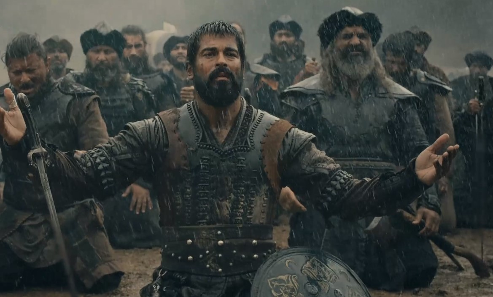

<!DOCTYPE html>
<html>
<head>
  
    <title>Document</title>
</head>
<body>
    <h1>kurulus osman</h1>
    <div></div>
    <p>Introduction
        During the long nineteenth century, 1798–1922, the earlier Ottoman patterns of political and economic life remained generally recognizable. In many respects, this period continued processes of change and transformation that had begun in the eighteenth century, and sometimes before. Territorial losses continued and frontiers shrank; statesmen at the center and in the provinces continued their contestations for power and access
        to taxable resources; and the international economy loomed ever more important.
        
        And yet, much was new. The forces triggering the territorial losses became increasingly complex, now involving domestic rebellions as well as the familiar imperial wars. Domestically, the central state became more powerful and influential in everyday lives than ever before in Ottoman history, extending its control ever more deeply into society.</p>
    
</body>
</html>